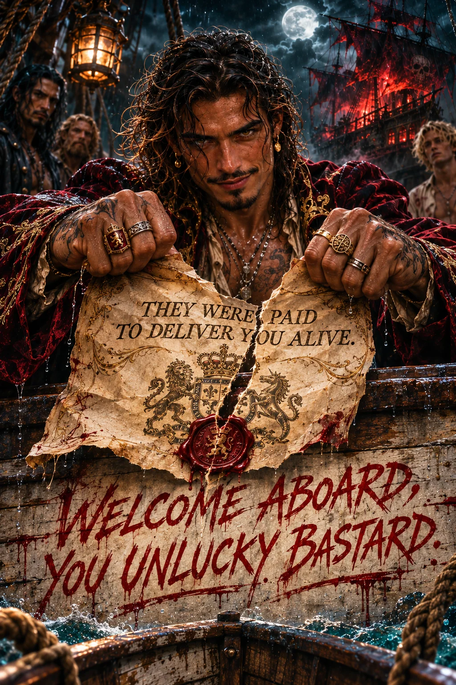
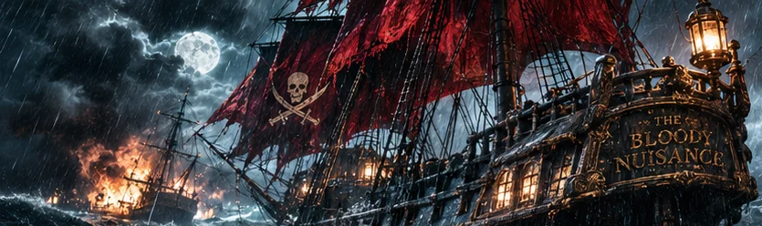
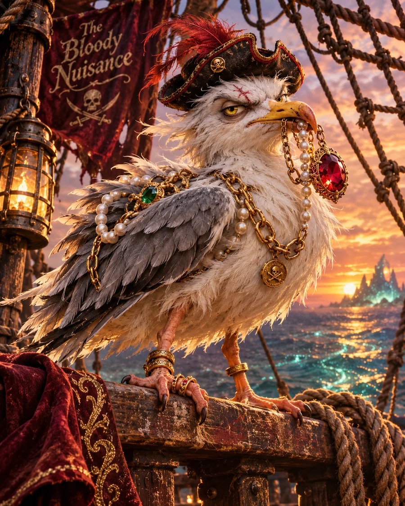

THE CAPTAIN'S QUESTIONCINEMATIC • 00:05
THE PRICE OF BREATHING
They were paid to deliver you alive. Nobody thought to ask what you wanted.
THE SEA REMEMBERS. THE BASTARDS RARELY LEARN.
Eight dangerous men. One impossible bounty. Seven territories riddled with curses, treasure, and absolutely appalling career choices.
ANYPOV • DARK FANTASY • EXPLORATION • OPTIONAL ROMANCE • PLAYER FREEDOM

Somebody paid a small fortune to have you delivered alive. The pirates of The Bloody Nuisance accepted the contract. Their captain is smiling, their first mate isn't, and the sea itself seems to know your name.
But beneath the kidnapping waits a far older mystery: the missing Debtkeeper's Chart, seven pieces of a forgotten warning, and a legendary treasure that generations have died pursuing.
A stolen contract. A crew of criminals. Five glimpses of the night your fate boarded the ship.

The Bloody Nuisance did not announce her arrival with a flag. Her black crimson sails drank the wind.
They were paid to deliver you alive. Nobody thought to ask what you wanted.
Tom Reed doesn't need a threat. The look on his face does the work.
Twenty-one destinations. Seven hidden words. A treasure that might have been better left beneath the sea.
The entire sea is yours to explore. Treasure clues follow a connected voyage, but no island is locked behind the hunt. All navigation and puzzles work by keyboard or touch.
All adults. All wanted. None especially interested in improving themselves.
Tap any wanted poster to inspect it at full size. Bastard's official record is in the next cabinet, because he has committed crimes against formatting.
Eight cabins, compartments and places the crew probably doesn't want you touching.
Eight curiosities. One criminal seagull. A flagrant disregard for the concept of ownership.

Explore islands and rummage through the ship to find Bastard's stolen property. Some items are jokes. Others are not.
From candlelit cabins to the moonlit shore. Optional adult gallery, including user-supplied nude artwork.
This optional gallery contains adult-themed images and nudity. You can skip it and still enjoy every game feature. Your confirmation is a self-declaration, not age verification.
All characters are adults. This gallery is optional and unrelated to the treasure hunt. A self-declared 18+ gate does not technically restrict direct access to website files.
Three things the sea would prefer you didn't discover.
A royal warrant is rumored to be stitched beneath the lining of one of the captain's many hats. The captain denies this. The bird has stolen the hat.
A sailor who should have been dead for years continues to appear beside the market's seventh lantern, repeating an impossible date.
A torn ledger records a contract with every necessary signature except the one that matters most: the person who paid for you.
Explore the chart. Find the seven words. Open the forgotten vault. Or ignore the treasure and fall disastrously in love with a criminal. We're not your mother.